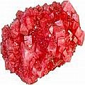

Auto-cura de dentes, regeneração e rebrota de dentes e gengivas
Assunto - não muito discutido na mídia convencional – recebe destaque nessa seção de CuraDente.com via citações, histórias da vida real, pesquisa e conselho sobre a capacidade da dentição humana e gengivas para regenerarem, remineralizarem, auto-curar-se e renascerem. Médicos e dentistas, pesquisadores e indivíduos relatam fatos, opiniões, observações, testemunhos e recomendações testemunhando a capacidade inata dos dentes e gengivas humanos de restaurarem sua integridade até certo grau.
Favor notar que alguns dos pesquisadores mencionados acima provavelmente não endossem todos e quaisquer o material publicado por CuraDente.
Claramente, a cárie dentária é frequentemente um processo reversível, semelhante à diária "construção” e “desconstrução” de partes do esmalte dentário (ver Desmineralização-Remineralização).
Pessoalmente creio – e minha experiência tem me mostrado – que até mesmo dentes seriamente danificados podem reagir a bom “tratamento” (alimentação, limpeza, etc – NÃO tratamento dentário) e podem ser regenerados até vários graus – ao menos a ponto de poderem ser usados quase normalmente durante alguns anos1 (embora dentes cujas raízes tenham sido danificadas, especialmente por toxinas dentárias e tratamentos2 parecem se esmigalhar, ao final). Sobre relatos contados na primeira pessoa e histórias da vida real sobre auto-cura de dentes e gengivas, inclusive rebrota de dentes em adultos, veja Experiências Pessoais & Testemunhos e Espiritualidade.
Notas de Pé-de-Página
1 Mais em Sugestões: que fazer quando você não pode ou não quer ir ao dentista
2 Veja Perfuração & obturação de dentes: uma escolha equivocada? e toda a seção Convencional.